画面案 1版（11/25）。本人が貼った Gemini の案（docs/pm/ext/gemini-ia-1125.txt）をもとに、2つの案を並べた。アプリには入れていない。押すとその画面の HTML が開く。
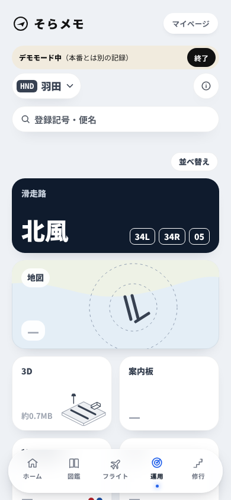
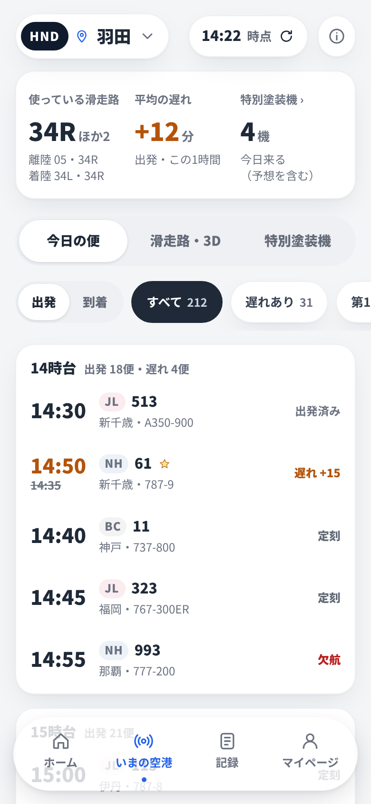
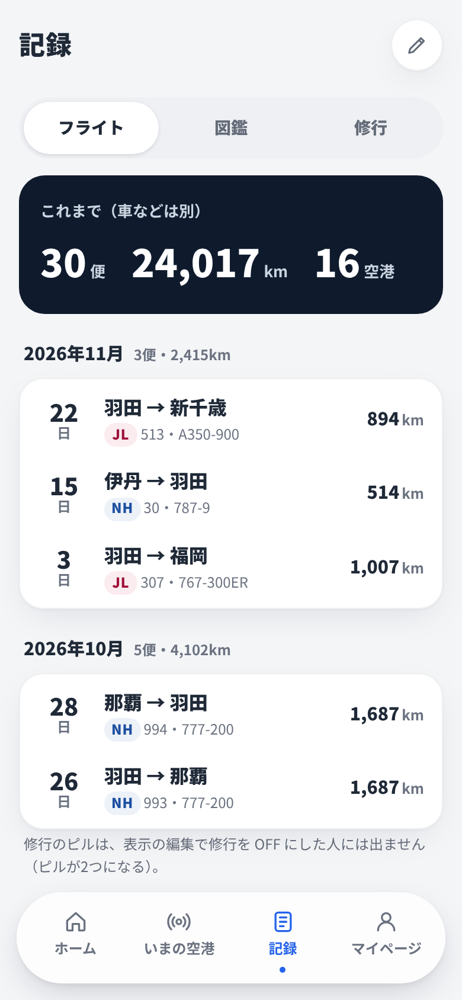
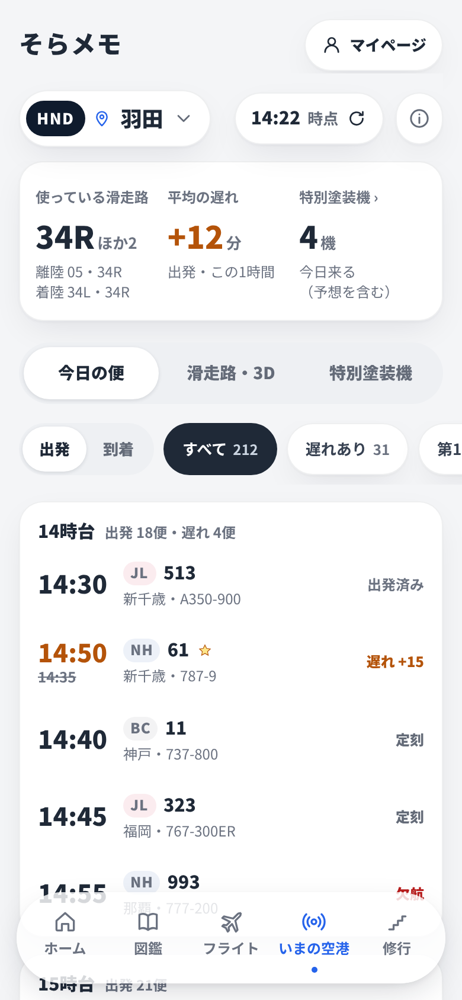
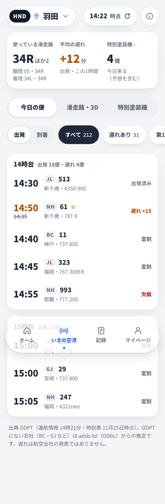
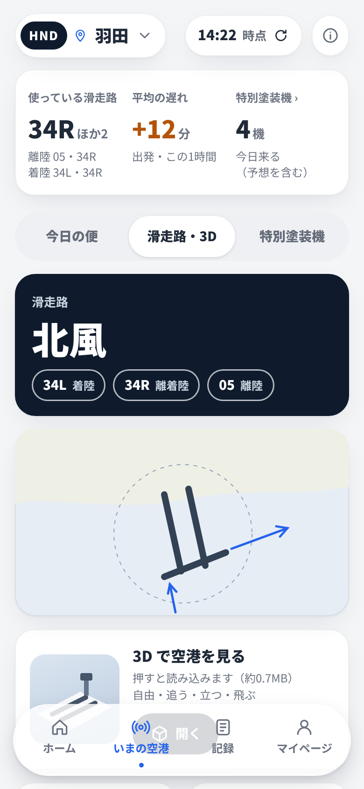
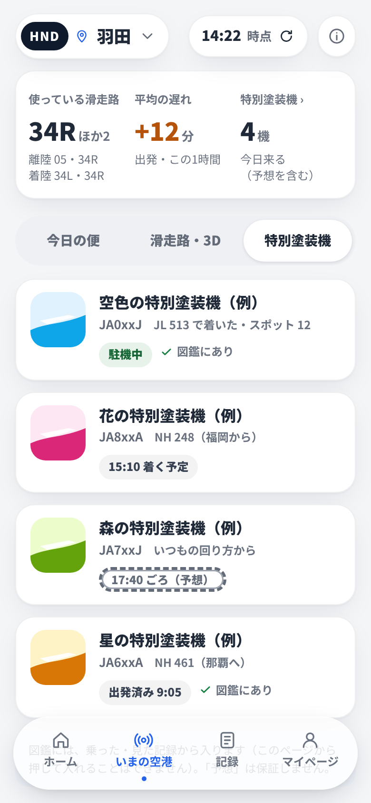
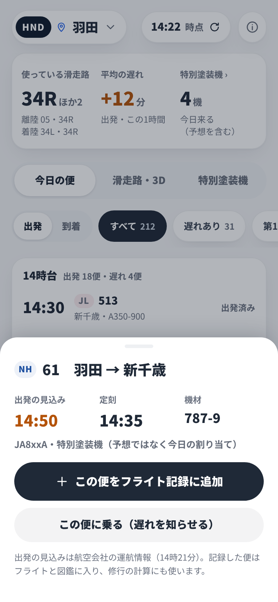
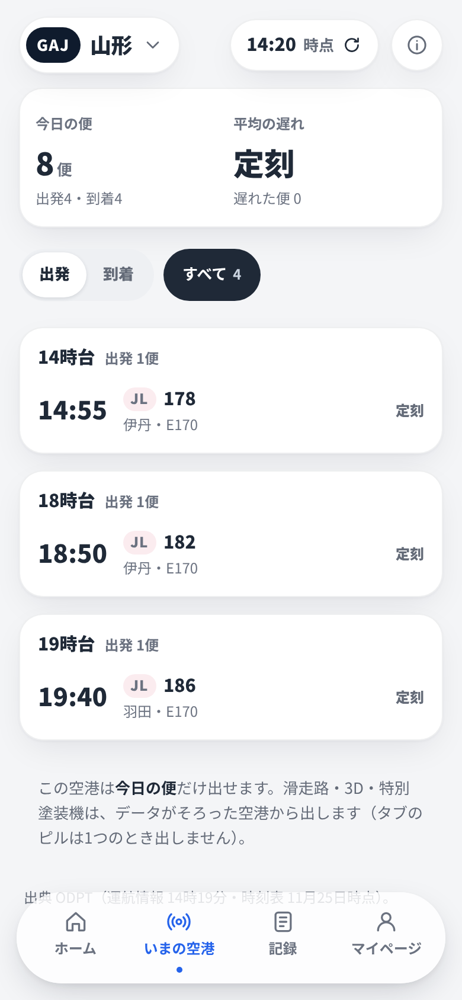
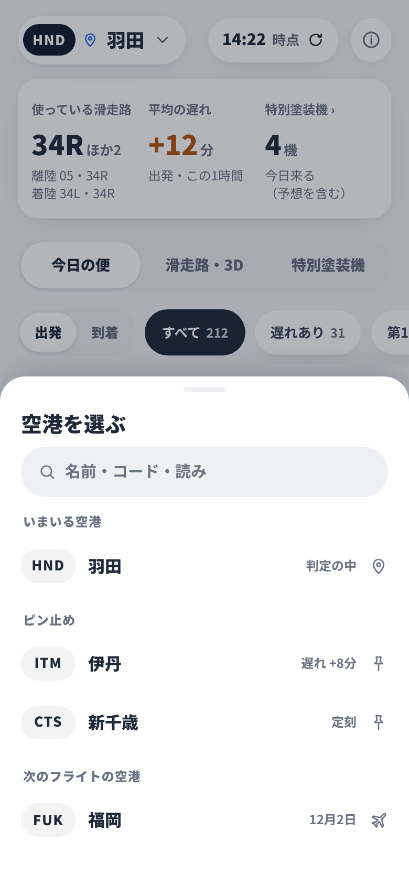
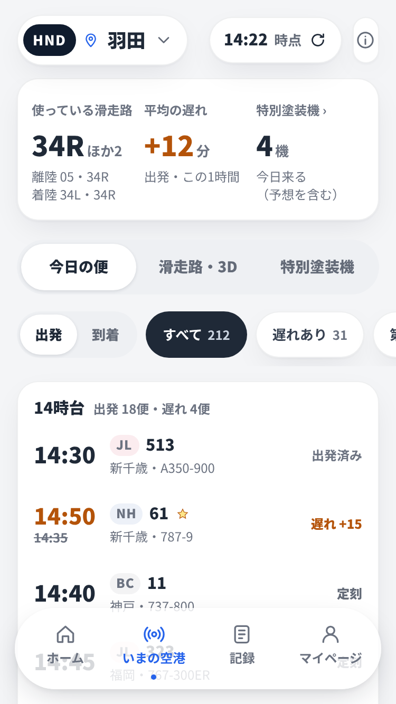
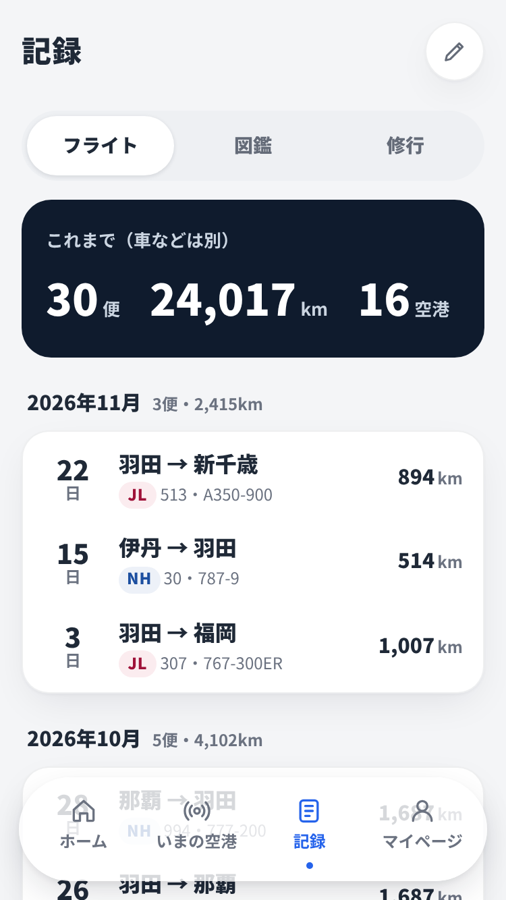
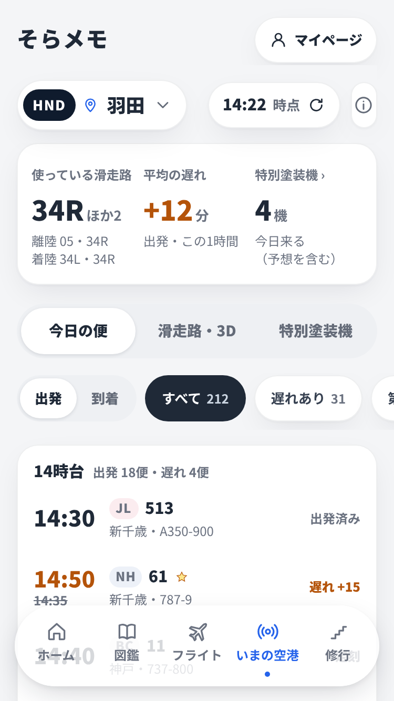
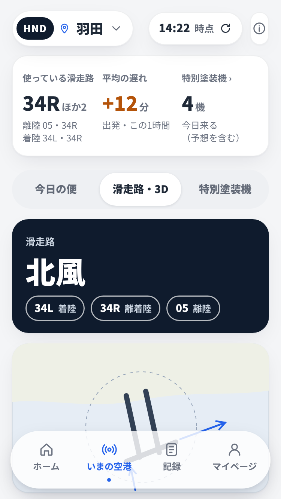
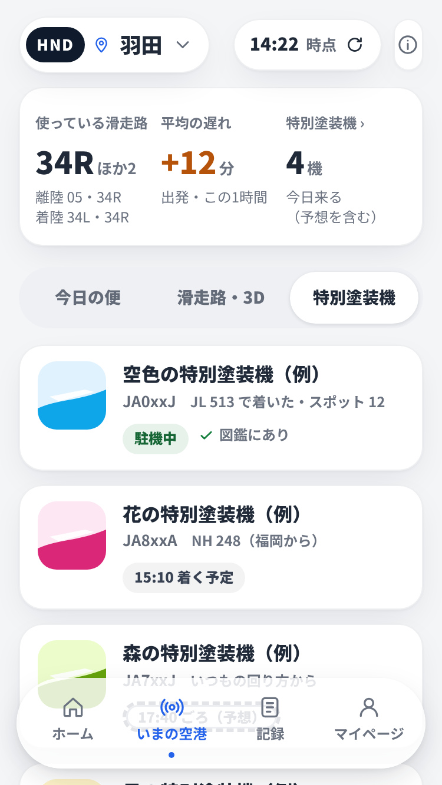
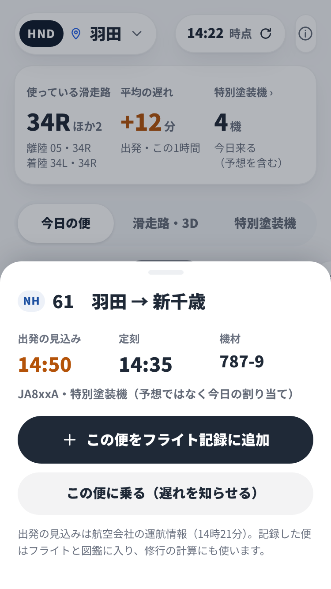
| 運用のカードの並べ替え（11/22） | 案A・案B とも：今のカードを3つのピルに分けて入れ、ピルの中で並べ替えられる形を残す（今日の便＝案内板・遅れ・1日の山・定時／滑走路・3D＝滑走路・地図・3D・空の道すじ・撮る人／特別塗装機＝特別塗装機・この先（予想）） |
| マイページ案B（11/24） | 案A：マイページが下のタブになり、右上のボタンはなくなる（中身は案B のまま）。案B：今のまま右上 |
| 3D の4つの見方（11/25） | 案A・案B とも：「滑走路・3D」のピルの中の 3D のカードから開く。開いたあとの自由・追う・立つ・飛ぶは変えない |
| 全部乗せで始める（11/8） | 案A：修行のピルを「はじめ OFF」にすると、11/8 の決まりを変えることになる（報告で本人に聞く）。案B：今のまま |
作り方：make/build.py → make/shoot.py（390×844 と 375×667、2倍）。測った値：12px 未満の字 0・44px 未満の押す所 0・横のはみ出し 0（make/measure.json）。特別塗装機の名前と登録記号は例。